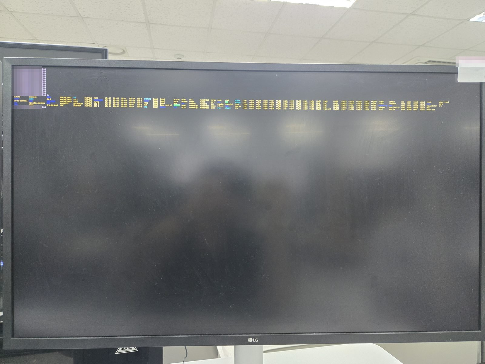
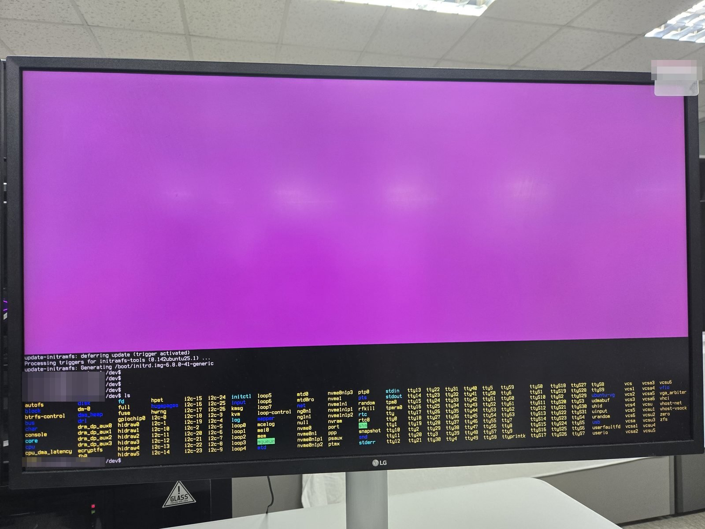

Ubuntu Server Cli 모드 4K 고해상도 모니터 초간단 폰트크기 키우기
4K 모니터에서 Ubuntu Server 콘솔 글씨가 보이지 않을 만큼 작을 때, dpkg-reconfigure console-setup 한 번으로 폰트를 Terminus 16x32로 키우는 방법.
오랜만에 리눅스(Ubuntu Server)로 돌아왔더니 4K 모니터에서 폰트크기가 너무 작아 글씨가 보이지 않습니다.
Linux Cli 모드의 폰트크기를 간단하게 키워보겠습니다.

아래 명령어를 사용해 콘솔 폰트 셋업으로 진입합니다.
sudo dpkg-reconfigure console-setup아래 설정으로 진행하고 나머지는 기본 상태로 다음을 눌러주세요.
폰트: Terminus
폰트크기: 16x32
폰트가 그래도 볼만한 정도로 커졌습니다! 끝~!
원문: codespectrum.net, 2024-10-16 게시. 필자의 기술 블로그 코드스펙트럼(CODESPECTRUM)에 올렸던 글을 이곳으로 옮겨 왔습니다. 문장과 명령어는 원문 그대로 두고 서식만 정리했습니다.